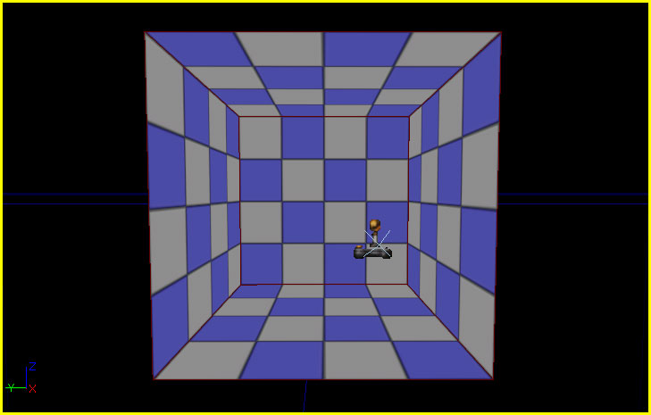

UDN
Search public documentation:
UnrealScriptGameFlowCH
English Translation
日本語訳
한국어
Interested in the Unreal Engine?
Visit the Unreal Technology site.
Looking for jobs and company info?
Check out the Epic games site.
Questions about support via UDN?
Contact the UDN Staff
日本語訳
한국어
Interested in the Unreal Engine?
Visit the Unreal Technology site.
Looking for jobs and company info?
Check out the Epic games site.
Questions about support via UDN?
Contact the UDN Staff
UnrealScript 游戏流程
概述
+ 初始化引擎
|--+ 引擎加载地图
|--- 设置游戏类型
|--+ 初始化游戏性
| |--- 调用 GameInfo:InitGame() 初始化游戏类型
| |--- 调用 Actor::PreBeginPlay() 初始化所有 Actor
| |--- 调用 Actor::PostBeginPlay() 初始化所有 Actor
|--+ 玩家加入
|--- 在游戏类型上调用 GameInfo::Login()，控制生成该玩家。
|--- 在游戏类型上调用 GameInfo::PostLogin()，控制这个新玩家

启动动画
DefaultEngine.ini 的 FullScreenMovie] 部分中指定的 StartupMovies 数组指定的全屏视频 (.bik)。
[FullScreenMovie] +StartupMovies=UDKFrontEnd.udk_loading
地图加载
入口地图
在游戏开始时加载的地图可以通过命令行指定，如果没有指定要加载的地图，那么加载默认地图。通常，不会指定地图，允许加载默认地图或入口地图。 默认地图在[URL] 部分的 DefaultEngine.ini 文件中指定。
[URL] Map=UDKFrontEndMap.udk
UDKFrontEndMap.udk 地图如下所示：

主菜单
这里没有可以强制游戏强行将指定菜单作为主菜单使用或强制游戏启动进入主菜单的特殊功能。正如上面简明描述的一样，启动时加载的地图就是为了加载主菜单。 它的灵活性非常强，可以控制游戏的启动方式。例如，一个游戏可以轻松启动，然后立即显示主菜单，而另一个游戏可以在启动的时候显示一个可以转换为主菜单的过场动画，但是另一个游戏可以在显示菜单之前进行一段时间的游戏。事实上，如果需要游戏甚至可以略过主菜单。 使用 Kismet 打开这个菜单。用于加载UDKFrontEndMap.udk 地图中的主菜单的 Kismet 示例如下所示：

加载画面
从一个地图转换到另一个地图的任何转换过程都会显示一个加载画面。这个加载画面实际上是一个从DefaultEngine.ini 文件的 FullScreenMovie] 部分指定的 LoadMapMovies 数组中随机选择的全屏显示视频 (.bik)。
[FullScreenMovie] +LoadMapMovies=UDKFrontEnd.udk_loading
游戏启动
游戏初始化
在执行任何其他脚本之前调用当前GameInfo 的 InitGame() 事件，其中包括所有 Actor 的 PreBeginplay() 事件。它主要供游戏类型设置它自己的参数并生成需要的任何辅助类。
event InitGame( string Options, out string ErrorMessage )
PreBeginPlay
PreBeginPlay() 事件是开始执行 Actor 的脚本之后在 Actor 上调用的第一个脚本函数。它的名称表明它要在游戏开始之前进行调用，如果在游戏启动的时候这个 Actor 存在，那么就会是这种情况。如果在游戏过程中生成 Actor，那么就算游戏已经开始还是会调用该事件。可以在这里进行非常特殊的初始化过程，但是请记住此时还没有初始化该 Actor 的组件，而且没有可靠的方法可以确保所有外部对象已经进行初始化。
event PreBeginPlay()
PostBeginPlay
在通过所有其他 Actor 的PreBeginPlay() 事件初始化它们后调用 PostBeginPlay() 事件。该事件通常用于初始化属性，在世界中查找对其他 Actor 的引用，并执行任何其他通用初始化。我们可以这么认为，这个事件是与 Actor 的构造函数等价的脚本。 即便如此，还是要初始化一些需要使用 Actor 中提供的特殊事件的函数。例如，与动画相关的初始化和 AnimTree 最好在 PostInitAnimTree() 事件中执行，因为在创建并初始化 AnimTree 后会调用它。这里提供了很多这样的事件以进行此类特殊初始化。在将指定初始化功能添加到 PostBeginPlay() 事件前，最好首先搜索这些事件。
event PostBeginPlay()
玩家创建
玩家创建在登录的过程中游戏类型（例如，GameInfo 类）内部进行处理。在网络多人游戏环境中，这个概念更加适用。虚幻可以采用相同的基础流程，不管这个游戏是网络版、单机版、多人游戏还是单人游戏，不过显然在网络游戏中需要进行其他操作。
登录过程可以分为以下几个阶段：
- 登录前
- 登录
- 登录后
PreLogin() 事件，这个事件主要负责确定是否允许玩家加入游戏。它可以使用游戏类型的 AccessControl 对象确定玩家是否可以通过调用它的 PreLogin() 函数加入游戏。
event PreLogin(string Options, string Address, out string ErrorMessage)
Login() 事件，它主要负责生成玩家。应该在这里添加创建新玩家需要的任何特殊功能。
event PlayerController Login(string Portal, string Options, const UniqueNetID UniqueID, out string ErrorMessage)
PostLogin() 事件。在这里可以进行玩家初始化，同时可以安全调用 PlayerController 上的复制函数。
event PostLogin( PlayerController NewPlayer )
比赛开始
实际游戏是指从生成玩家开始到游戏结束的整个过程，通常被称为比赛。这只是个术语，对使用虚幻引擎 3 创建的游戏类型毫无影响。 在从PostLogin() 事件中调用游戏类型的 StartMatch() 函数（同时可以从 PendingMatch 声明中的 StartMatch() 和 StartArbitratedMatch() 中进行调用）时开始比赛。整个函数主要负责生成玩家的 Pawns 然后通知所有玩家比赛已经开始。
function StartMatch()
Pawns 的实际生成过程是在 RestartPlayer() 函数中进行的。通过 StartHumans() 和 StartBots() 函数调用它，而这两个函数可以通过 StartMatch() 函数进行调用。除了生成 Pawns 外，这个函数可以定位起点，例如玩家开始的 PlayerStart Actor。
function RestartPlayer(Controller NewPlayer)
结束游戏
GameInfo 子类的特殊函数中进行。例如， UTGame 游戏类型具有一个 CheckScore() 函数，每次玩家死亡的时候都会调用这个函数检查看看这次死亡是否应该结束游戏。其中某个函数可以确定游戏应该结束后，该函数会调用 EndGame() 函数，而它会调用 CheckEndGame() 。这些函数可以确保游戏结束，然后执行与结束当前游戏类型相关的操作。
在这个冒险类角色扮演游戏示例中，当玩家在地下城中击败大怪或完成目标的时候，大怪或目标将会分别通知游戏类型已经击败大怪或完成目标。接下来游戏类型将会检查确保已经满足所有结束游戏的条件。如果结束游戏条件确实已经满足，那么游戏类型会调用 EndGame() 执行相应操作结束游戏： 将玩家送回主要世界并记录已经完成地下城关卡（通过任何方式）。在主要世界中，游戏类型将会加载玩家的进度，可能是玩家完成的地下城关卡，然后检查看看是否满足所有结束游戏的条件。如果条件已经满足，那么该游戏类型会调用它的 EndGame() ，初始化游戏结束时需要进行的相应操作。
显然，这只是个例子，对于结束游戏，每个游戏都会有不同的规则、流程和条件，但是其中的原理应该是一样的。